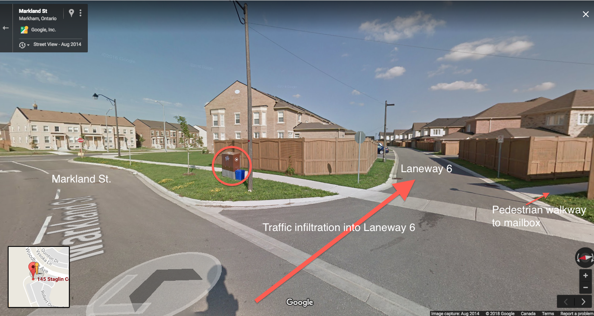
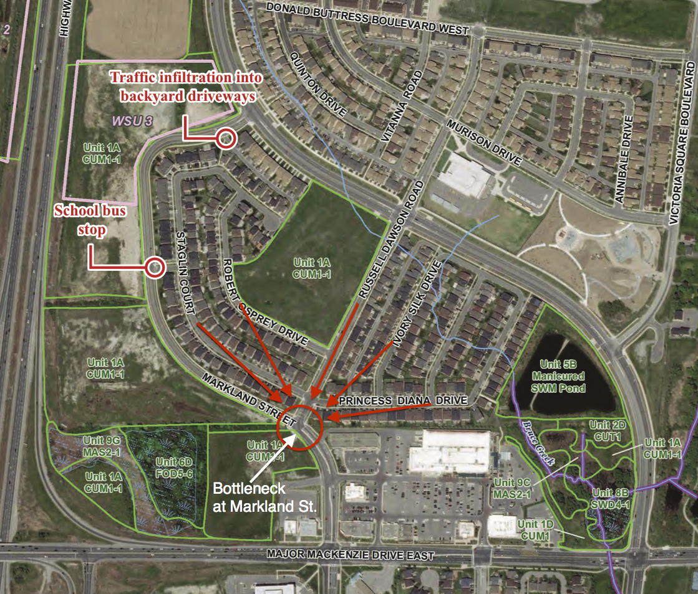
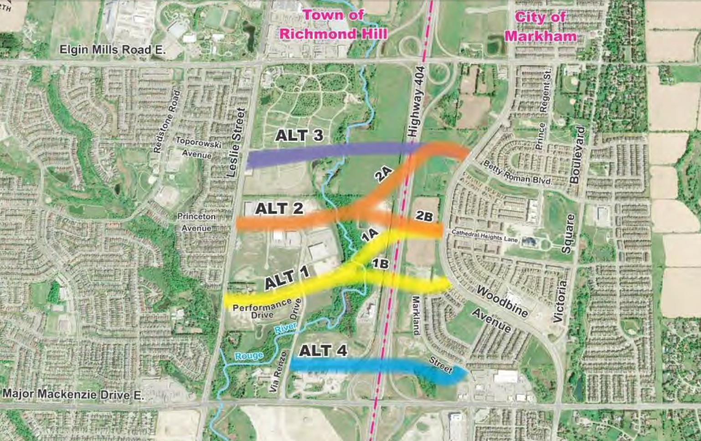

The video below is just 1 example of how the morning rush hour looks like on Markland St.
0:55 A silver car decided not to wait and drove on a lane not supposed to be driven on.
A few others, in hope to beat the traffic, made a left turn onto Laneway-6 which is very narrow with garages on both sides.
1:13 (Silver car)
1:23 (1 Silver and 1 Black car)
Frustrated drivers stuck on Woodbine Ave. or Markland St. would infiltrate onto Laneway-6 and use it as a shortcut/bypass to beat the traffic. Laneway-6 is narrow with backyard garages on both sides. The infiltrated traffic often travel at unsafe speed, making it very challenging and dangerous for residents to back out of their garages.

Ask any local residents and they can tell you the challenges we face on Markland St. during rush hour.
As you can see in the screenshot below, local traffic gets funneled onto Markland Street, waiting for access to Major Mackenzie Drive.
There is also a school bus pickup/drop off on Markland Street (near Moulton Gate).
Adding more traffic, especially non-local drivers who are not familiar with the daily dynamics of the road, is very dangerous for drivers and pedestrians.
Markland Street is already very busy as-is. It is unwise to add more traffic to it.
Local residents think this road crossing should be constructed further north in order to fulfill its purpose of diverting traffic to Richmond Hill (i.e. reduce traffic on Woodbine Ave. and Major Mackenzie Dr.)
Recall the video above, there is a continuous stream of traffic coming from the north on Woodbine Ave.
Many will make a right turn onto Major Mackenzie Drive to either go onto Highway 404 or continue westbound to Richmond Hill.
If the region wants to alleviate traffic on Woodbine Ave and Major Mackenzie Dr., it stands to reason that the road crossing should be constructed further away from Major Mackenzie Dr. in order to divert traffic sooner.
Alternate 1A, 2A, 2B, and 3 can fulfill this purpose with much less impact to local Markham residents.
1A and 2B also has the added benefit of providing a direct route to Cathedral of the Transfiguration (Markham) and the shops around it, which is music to the ears of business owners in that area.
We would like the region's project team to reconsider the alternatives, but this time give more weight to the concerns raised by local residents who will have to live with this decision for years to come.